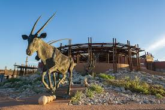
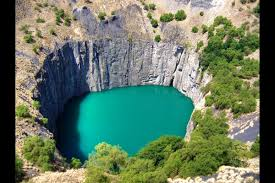
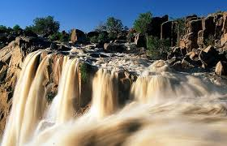
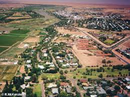

The Northern Cape is the largest and most sparsely populated province of South Africa. It was created in 1994 when the cape province was split up. It's capital is Kimberley. This province has the Kalahari Gemsbok National Park, part of the Kgalagadi Transfrontier Park, and international park shared with Botswana.
The following images are plces you can explore in the Northern Cape
   1.Kgalagadi Transfrontier Park-Twee Rivierren(Parks,Chalets and Camping), Tashebube, Rooiputs lodge(Camping,Safari,Desert and Safari), Kieliekrankie(parks and outdoor recreation), Polentswa wildernessTrail(camping).
2.Kimberley-The Big Hole(massive hand-dug diamond mine pit), McGregor Museum(Natural & cultural history exhibits), Mokala National Park(Lodging amongst endangered species), william Humphreys Art Gallery(Museum with European masterpieces).
3.Augrabies Falls National Park-Augrabies falls(park,waterfall,lizard,canyon and river), Riemvasmaak Hot springs, Echo corner.
4.Upington-Orange River Wine Cellars(Wine and Wine tasting), Skkie se Arkie(River), Kgalagadi Transfrontier Park(Huge wildlife preserve with camping), Kalahari-orange Museum.
1.Hantam Vleisfees
2.AfrikaBurn
3.Carnarvon Agricultural show
4.KAROOFEES